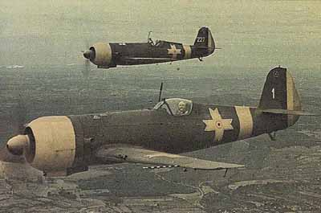

IAR 80 a fost un avion monoplan de vânătoare și bombardament în picaj românesc folosit în cel de-al Doilea Război Mondial. A fost realizat la IAR Brașov de o echipă compusă din: prof. Ion Grosu, Ion Coșereanu, ing. Gheorghe Zotta, Viziru Grosu și Ion Wallner. La vremea respectivă, IAR 80 era comparabil cu cele mai moderne avioane de luptă, precum Bf 109 din Germania, Mitsubishi A6M Zero din Japonia, Hawker Hurricane și Supermarine Spitfire din Marea Britanie. În a doua parte a războiului, acest proiect s-a dovedit a fi depășit tehnologic. După aproximativ cinci ani de la terminarea războiului, avioanele au fost înlocuite în totalitate cu modele sovietice. În anul 1955 Comandamentul Forțelor Aeronauticii Militare a hotărât dezmembrarea aparatelor și casarea lor. Nu s-a păstrat niciun aparat întreg
La sfârșitul anului 1937 a început munca pentru realizarea IAR 80, inițial fiind conceput cu carlinga deschisă și motorul IAR K14-III C32 de 870 CP (649 kW). Se lucra încet la acest proiect și primul zbor a fost efectuat în aprilie 1939. Testele ulterioare au fost impresionante: avionul atingea viteza de 510 km/h la înălțimea de 4000 m. Câteva probleme mărunte descoperite în urma testelor au fost rezolvate în următorul an. Pentru mai multă putere a fost instalat un nou motor de 930 CP (690 kW) și anume versiunea C36 a K14-III. Din pricina puterii acestui motor au fost necesare de asemenea modificări ale fuzelajului. Ca urmare, rezervorul a fost mărit la 455 l, aripile lungite și forma cozii modificată pentru eliminarea unor probleme de aerodinamică. Carlinga a fost mutată un pic mai în spate, iar pentru a compensa vizibilitatea scaunul pilotului a fost înălțat și întreaga carlingă acoperită. Prototipul îmbunătățit a fost testat cu avionul Heinkel He 112 care tocmai sosise din Germania ca începutul unei mai mari comenzi. Deși He 112 era oarecum mai modern și mult mai bine armat, IAR 80 cu un motor mai puternic s-a dovedit a fi mult mai performant în restul privințelor. Aviația Regală, fiind impresionată, a comandat imediat 100 de bucăți pe 18 decembrie, 1939, iar comenzile pentru He 112 au fost anulate.
Producția trebuia să înceapă imediat dar procurarea armamentului s-a dovedit a fi o problemă serioasă. Pe prototip au fost montate doar două mitraliere Fabrique Nationale de calibrul 7,92 mm de producție Belgiană. Acest armament era evident prea slab pentru folosirea în război iar conform proiectului avionul ar fi trebuit să fie dotat cu șase astfel de arme. Cu ocazia invadării Belgiei și a Țărilor de Jos de către Germania, furnizarea acestor arme a încetat și din păcate nu existau arme românești care să se potrivească pe avion. În lipsa armamentului producția a fost oprită. În noiembrie 1940 România intră în alianță cu Puterile Axei și germanii au permis reluarea transportului de armament din Belgia. Chiar dacă s-a achiziționat mai mult armament, avioanele produse aveau montate doar 4 mitraliere. La exemplarele de serie fost mărită lungimea, anvergura și suprafața portantă. A primit un motor mai puternic și a crescut greutatea totală. Din această versiune vor fi construite în total 50 de aparate, numerotate 1 - 50.
| Lungime | 8,90 m |
| Anvergura | 10,50 m |
| Motor | IAR K14-1000A - motor în stea dublă cu 14 cilindri |
| Putere | 764 kW / 1025 CP |
| Viteza maximă | 550 km/h la 3970 m |
| Înălțime maximă | 10 500 m |
| Raza de acțiune | 940 km |
| Greutate (gol) | 1780 kg |
| Greutate (zbor) | 2550 kg |